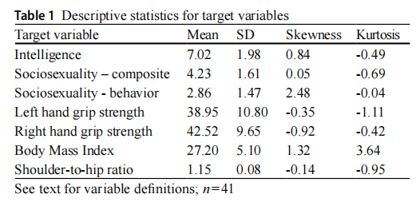
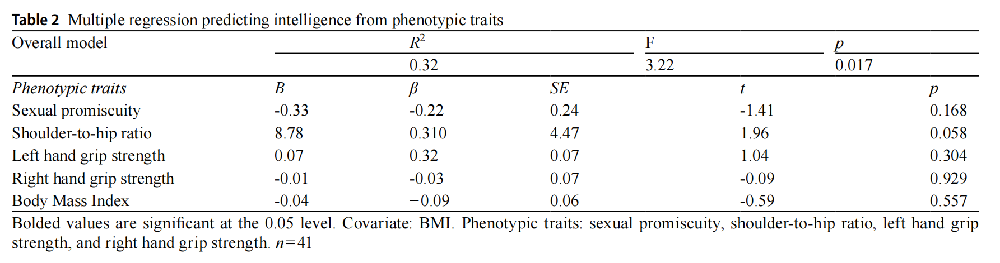
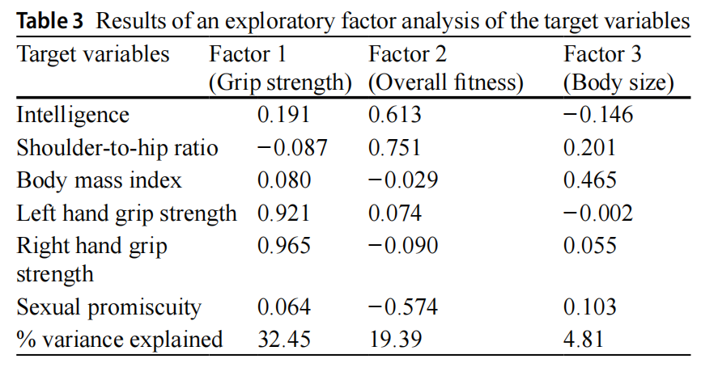

聪明的人，身体也更"优质"吗？
我们大概都有这种感觉：聪明的人在很多方面似乎都"更好"一些。
比如在学校里，成绩好的人往往体育也不差；职场中，能力强的同事似乎精力和健康状况也更好。这到底是刻板印象，还是背后真的有一种生物学机制在起作用？
在进化生物学中，有一个假说认为：所有表明个体"适应度"的特征可能是相互关联的——这就是所谓的"表型适应度因子"（phenotype-wide fitness factor）假说。简单说，如果你的基因质量好、突变负荷低，那么你的智力、身体健康、外貌吸引力甚至生育能力，应该都是"好"的。
但事情真的有这么简单吗？2026年发表的一项研究就试图检验这个问题。
一篇论文，四个核心指标
(18-33岁, M=23.33)
性开放度 · BMI
这项研究做了什么？
研究者从"表型适应度因子"理论出发，假设：如果智力是基因质量的指标，那么它应该与其他反映身体质量的指标正相关。他们招募了41名美国中西部大学的年轻男性，测量了以下指标：
流体智力 — Raven渐进矩阵测验
使用Raven高级渐进矩阵简版（Raven-SF），12道图形推理题，测量抽象推理和问题解决能力。满分12分，样本平均7.02分。
身体形态 — 握力 & 肩臀比
用数字握力计测量左右手握力（HGS），用卷尺测量肩围和臀围计算肩臀比（SHR）。这两个指标都被视为男性肌肉发达程度和身体质量的客观指标。
性行为 — SOI-R量表
使用社会性取向量表修订版（SOI-R）测量性开放度和滥交倾向。研究者重点关注其中的"行为"维度——它比量表总分更能反映实际的性滥交水平。
BMI — 排除体型混淆
测量身高和体重计算BMI，作为控制变量纳入分析，因为体型较大的男性天生握力更强。研究仅纳入完成所有程序的41人数据进行分析。
智力越高，握力越强，肩臀比越大
研究者首先对所有变量进行了相关分析。在41人的最终样本中，出现了两个显著的正相关——而且是"肉眼可见"的效应量：
换句话说，在这群年轻男性中，智力得分更高的人，左手握力更强，肩臀比也更大（即肩膀更宽、臀部相对更窄，呈倒三角体型）。值得注意的是，在将样本扩大到66人后，左右手握力与智力的正相关仍然显著（r = .30, p = .024）。
但有一个有趣的细节：握力和肩臀比之间竟然没有显著相关（r = .10, ns）。这说明虽然它们各自与智力有关，但它们可能是两套不同的"身体信号"。

原论文 Table 1。展示了智力（M=7.02, SD=1.98）、左手握力（M=38.95kg, SD=10.80）、右肩臀比（M=1.15, SD=0.08）、性行为得分（M=2.86, SD=1.47）、BMI（M=27.20, SD=5.10）等变量的均值、标准差和分布形态。
智力越高的男性，性滥交越少？
如果说前一个发现符合"表型适应度因子"的预测，那下一个发现就有些"反直觉"了：
智力得分越高的年轻男性，自报的性滥交行为反而越少。注意：这里说的是SOI-R的行为维度（如一生性伴侣数量、过去一年的性伴侣数量等），而非量表总分。总分与智力的相关并不显著（r = −.14, ns），说明单纯的态度和欲望层面的"性开放"与智力无关，真正与智力负相关的是实际行为。
这似乎与"好基因=高适应度=更多交配成功"的简单逻辑矛盾。但研究者引用Kanazawa（2010）的观点提出了一个有趣的解释：
高智商的人更倾向于接受"进化新颖"的思想和行为——比如一夫一妻制的性排他性。在人类漫长的进化史上，多偶制（polygyny）才是常态；而现代社会中强调的性忠诚，反而是相对"新颖"的文化产物。高智商个体可能更容易适应这种新颖的社会规范。
所有变量一起上，谁能预测智力？
研究者将握力（左右手）、肩臀比、BMI和性滥交行为全部放入一个多元回归模型来预测智力得分：
模型整体显著，能解释智力32%的变异。但令人意外的是：在控制了所有其他变量后，只有肩臀比（SHR）是智力的边际显著预测因子（β = 0.31, p = .058），而左右手握力和BMI的预测作用都不显著。
这意味着：在多个身体指标中，肩臀比（倒三角体型）与智力的关联最"独特"，它传递的关于智力的信息不能被握力或BMI所替代。

原论文 Table 2。R² = 0.32, F = 3.22, p = 0.017。SHR的β = 0.31, p = .058（边际显著），其余变量不显著。
真的有"适应度因子"存在吗？
研究者还仿照前人Arden等（2009）的做法，做了一个探索性因子分析（主轴因子法 + Promax旋转），把所有变量扔进去，看看它们会自然聚成几个"群"：

原论文 Table 3。KMO = 0.558, Bartlett球形检验 p < .001。提取了3个因子，累计解释方差约56.7%。
关键发现：智力（Raven得分）在因子2上的载荷最高（0.613），这个因子同时包含了肩臀比的正向载荷（0.751）和性滥交的负向载荷（−0.574）。研究者将这个因子命名为"整体适应度因子"——智力和身体质量信号朝同一个方向，而性滥交则在相反方向。
这再次印证了一个微妙的发现：身体质量（SHR）与智力"携手"，但性滥交与智力"背道而驰"。
三句话总结研究发现
智力 ↔ 身体形态：正相关
在41名年轻男性中，流体智力与左手握力（r=.35）和肩臀比（r=.43）均显著正相关。控制BMI后，肩臀比是智力的唯一（边际）显著预测因子。
智力 ↔ 性滥交：负相关
高智力与较少的性滥交行为相关（r=−.35），而非仅仅态度上的保守。这与"好基因=多交配"的简单逻辑矛盾，但符合"高智力→进化新颖偏好"假说。
存在"适应度因子"的证据
因子分析揭示了一个共同的"适应度"维度：智力与肩臀比同向载荷，性滥交反向载荷。但握力独立于这一维度，提示身体信号并非铁板一块。
这对我们意味着什么？
身体是智力的"侧面镜子"？
握力和肩臀比可能与智力共享部分基因基础（突变负荷低=各方面都"好"）。但相关性不等于因果——不是练肌肉就能变聪明，而是某些深层生物因素让两者"同涨同落"。
"好基因"不意味着"繁殖更多"
在现代社会中，高智商者反而不那么滥交。这提醒我们：进化适应度在当代环境中的表达方式，可能已经与祖先环境大不相同。性排他性、一夫一妻制等"进化新颖"行为，可能是智力的社会表达。
谨慎解读，样本太小
n=41，全部是大学男生，大多数是白人。这个样本远不能代表一般人群。扩大样本后SHR-智力相关不再显著，说明这些发现需要更大、更多样化的样本验证。科学研究需要反复检验，不能拿一个小样本研究当定论。
一次探索，三张拼图
这项2026年的研究以一个小小的样本（41名美国大学男生）为我们提供了一幅有趣的拼图：
拼图一：智力与握力、肩臀比正相关——这是"表型适应度因子"假说的正面证据。身体上的"好"可能确实暗示着认知上的"好"。
拼图二：智力与性滥交负相关——这是"表型适应度因子"假说的反面证据。在现代社会，基因质量高≠滥交多。
拼图三：三者之间的关联模式在小样本中统计显著，但结论必须放在样本量小、人群单一的背景下谨慎解读。这是一篇探索性研究，而非盖棺定论。
所以下次有人说"四肢发达、头脑简单"，你可以告诉他：最新研究发现，至少在某些维度上，身体和大脑可能站在同一边。但科学永远是复杂而谦逊的——我们需要更多数据，而非一个简单的故事。